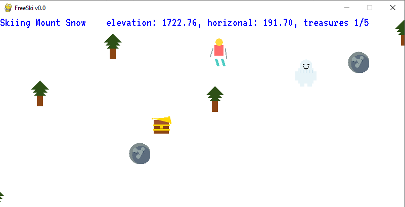
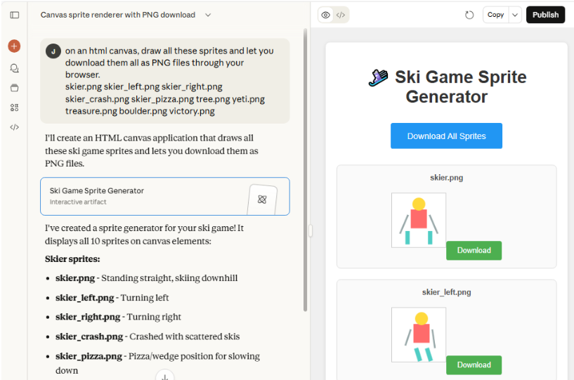
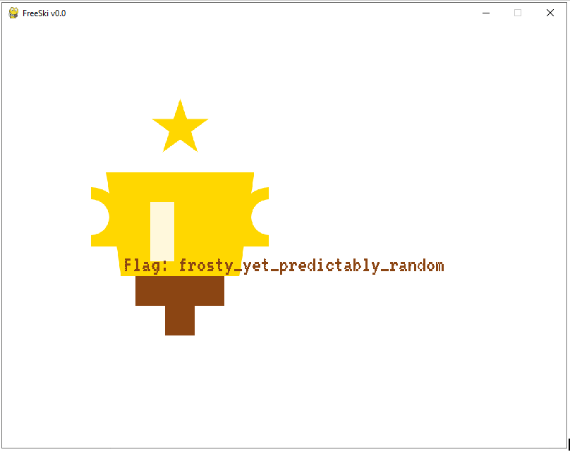
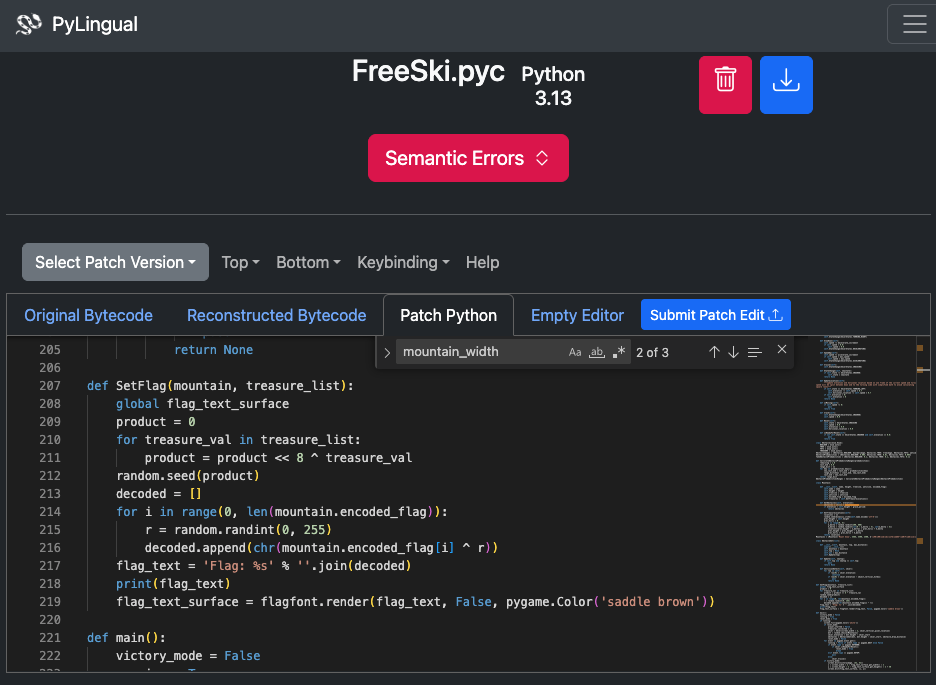

FreeSki

FreeSki.exe crashed at the very start. Next, decompilers choked on it. What's left were thousands of lines of raw bytecode. To find the hidden flag, I'd need to reverse engineer a deterministic RNG vulnerability, decrypt XOR'd flags, and never actually ski down a single mountain.
Challenge Overview
Help Goose Olivia in a simple skiing game: ski down the mountain and collect all five treasure chests to reveal the hidden flag.
First Run
Upon downloading and running FreeSki.exe, it crashed with a missing asset error and said that it was built with: Python 3.13.7 and Pygame 2.6.1. Pygame is a popular Python library for game development, providing modules to handle graphics rendering, sound, input devices, and game logic.
C:\Users\jim\Downloads>FreeSki.exe pygame 2.6.1 (SDL 2.28.4, Python 3.13.7) Hello from the pygame community. https://www.pygame.org/contribute.html Traceback (most recent call last): File "FreeSki.py", line 30, in <module> FileNotFoundError: No file 'img/skier.png' found in working directory 'C:\Users\jim\Downloads'. [PYI-6980:ERROR] Failed to execute script 'FreeSki' due to unhandled exception!
Extracting Python Bytecode
From this error, we can consider the first hint about PyInstaller Extractor to extract the Python
bytecode.
Using pyinstxtractor, I unpacked the executable and extracted a bunch of files. Among
them,
we see a familiar filename in: FreeSki.pyc which is the game's main
bytecode file.
Background Info - How Different Programs Are Compiled & Executed
For this challenge, it's useful to know how different programs are written and run.
Traditional Compiled Languages (C, C++, Rust)
- Source code is written in a human-readable programming language.
- A compiler/linker translates the source code directly into machine code, producing an executable (.exe) file.
- At runtime, the operating system executes the machine code directly.
Python: An Interpreted Language
- Source code (.py files) is written similarly to compiled languages.
- At runtime, the Python interpreter converts source code into bytecode (.pyc) and executes it in a Python virtual machine (PVM)—no native machine code is produced.
Packaging Python as a Windows Executable
Since Python doesn't compile to native machine code, tools like PyInstaller bundle everything needed to run the program:
- Your program's bytecode (.pyc files).
- Required third-party libraries (dependencies).
- An embedded Python interpreter (PVM).
This bundling approach creates larger executables (typically >10MB) compared to true compiled programs, but eliminates the need for users to have Python installed on their system.
Background Info: PyInstaller Extraction
PyInstaller-generated executables like FreeSki.exe are self-extracting archives containing:
- Compiled Python bytecode: The application's logic stored in .pyc files.
- Assets: Game resources such as images, sounds, and configuration files.
- Python libraries: Dependencies like Pygame and the embedded Python interpreter.
Tools like PyInstaller Extractor similarly extract the compressed components but into separate files for analysis. While extraction itself is version-agnostic, using Python 3.13 is important later when analyzing or decompiling the recovered bytecode to avoid version mismatches.
$ wget https://raw.githubusercontent.com/extremecoders-re/pyinstxtractor/refs/heads/master/pyinstxtractor.py $ wget https://www.holidayhackchallenge.com/2025/assets/FreeSki.exe $ python3.13 pyinstxtractor.py FreeSki.exe [+] Processing FreeSki.exe < snipped output > [+] Possible entry point: FreeSki.pyc < snipped output > [+] Successfully extracted pyinstaller archive: FreeSki.exe You can now use a python decompiler on the pyc files within the extracted directory
Deep Dive: View Full pyinstxtractor output
$ wget https://raw.githubusercontent.com/extremecoders-re/pyinstxtractor/refs/heads/master/pyinstxtractor.py $ wget https://www.holidayhackchallenge.com/2025/assets/FreeSki.exe $ python3.13 pyinstxtractor.py FreeSki.exe [+] Processing FreeSki.exe [+] Pyinstaller version: 2.1+ [+] Python version: 3.13 [+] Length of package: 16806404 bytes [+] Found 98 files in CArchive [+] Beginning extraction...please standby [+] Possible entry point: pyiboot01_bootstrap.pyc [+] Possible entry point: pyi_rth_inspect.pyc [+] Possible entry point: pyi_rth_pkgres.pyc [+] Possible entry point: pyi_rth_setuptools.pyc [+] Possible entry point: pyi_rth_multiprocessing.pyc [+] Possible entry point: pyi_rth_pkgutil.pyc [+] Possible entry point: FreeSki.pyc [+] Found 471 files in PYZ archive [!] Error: Failed to decompress PYZ.pyz_extracted/jaraco.pyc, probably encrypted. Extracting as is. [!] Error: Failed to decompress PYZ.pyz_extracted/setuptools/_distutils/compilers.pyc, probably encrypted. Extracting as is. [!] Error: Failed to decompress PYZ.pyz_extracted/setuptools/_distutils/compilers/C.pyc, probably encrypted. Extracting as is. [!] Error: Failed to decompress PYZ.pyz_extracted/setuptools/_vendor.pyc, probably encrypted. Extracting as is. [!] Error: Failed to decompress PYZ.pyz_extracted/setuptools/_vendor/jaraco.pyc, probably encrypted. Extracting as is. [+] Successfully extracted pyinstaller archive: FreeSki.exe You can now use a python decompiler on the pyc files within the extracted directory
Decompilation: Where Things Failed Again
Just as the second hint mentioned, the end of the pyinstxtractor output directed us to decompilation
(Decompyle++, also known as pycdc). It started strong,
extracting global variables and initialization code but then hit a wall and could not handle the
MAKE_FUNCTION opcode:
Installing Decompyle++
Windows Installation
For Windows users, I recommend following the steps outlined by renowned security researcher and SANS Internet Storm Center contributor Didier Stevens: ISC SANS Diary #31544.
Linux Installation
Important: Do not use the snap package. It installs an outdated version that doesn't recognize Python 3.13's magic number. Instead, build from source:
$ git clone https://github.com/zrax/pycdc.git $ cd pycdc $ sudo apt install git cmake build-essential $ cmake . $ make
Background: Python Decompilation Challenges
Python decompilation is notoriously inconsistent. While Python bytecode is designed to be platform-independent and relatively stable, decompilers must reconstruct high-level constructs (functions, control flow, etc.) from low-level instructions. This becomes particularly challenging with:
- New Python versions: Each release introduces new opcodes and optimizations
- Obfuscated code: Intentionally complex bytecode patterns
- Optimization: Compiler optimizations that remove or merge code structures
Python 3.13 introduced significant changes to bytecode generation, making it incompatible with many older decompilers. This is why the hint specifically recommends Decompyle++.
$ ./pycdc ../FreeSki.pyc # Source Generated with Decompyle++ # File: FreeSki.pyc (Python 3.13) Unsupported opcode: MAKE_FUNCTION (122) import pygame import enum import random import binascii None() pygame.font.init() screen_width = 800 screen_height = 600 < snipped 30+ more global variables and settings > skierimage = pygame.transform.scale_by(pygame.image.load('img/skier.png'), scale_factor) skier_leftimage = pygame.transform.scale_by(pygame.image.load('img/skier_left.png'), scale_factor) < snipped image and font loading > text_surface1 = 'Use arrow keys to ski and find the 5 treasures!'(False, pygame.Color, None('blue')) text_surface2 = " find all the lost bears. don't drill into a rock. Win game."(False, pygame.Color, None('yellow')) flag_message_text_surface1 = 'You win! Drill Baby is reunited with'(False, pygame.Color, None('yellow')) flag_message_text_surface2 = 'all its bears. Welcome to Flare-On 12.'(False, pygame.Color, None('yellow')) # WARNING: Decompyle incomplete
Deep Dive: Full pycdc Output
$ ./pycdc ../FreeSki.pyc # Source Generated with Decompyle++ # File: FreeSki.pyc (Python 3.13) Unsupported opcode: MAKE_FUNCTION (122) import pygame import enum import random import binascii None() pygame.font.init() screen_width = 800 screen_height = 600 framerate_fps = 60 object_horizonal_hitbox = 1.5 object_vertical_hitbox = 0.5 max_speed = 0.4 accelerate_increment = 0.02 decelerate_increment = 0.05 scale_factor = 0.1 pixels_per_meter = 30 skier_vertical_pixel_location = 100 mountain_width = 1000 obstacle_draw_distance = 23 skier_start = 5 grace_period = 10 screen = pygame.display.set_mode((screen_width, screen_height)) clock = pygame.time.Clock() dt = 0 pygame.key.set_repeat(500, 100) pygame.display.set_caption('FreeSki v0.0') skierimage = pygame.transform.scale_by(pygame.image.load('img/skier.png'), scale_factor) skier_leftimage = pygame.transform.scale_by(pygame.image.load('img/skier_left.png'), scale_factor) skier_rightimage = pygame.transform.scale_by(pygame.image.load('img/skier_right.png'), scale_factor) skier_crashimage = pygame.transform.scale_by(pygame.image.load('img/skier_crash.png'), scale_factor) skier_pizzaimage = pygame.transform.scale_by(pygame.image.load('img/skier_pizza.png'), scale_factor) treeimage = pygame.transform.scale_by(pygame.image.load('img/tree.png'), scale_factor) yetiimage = pygame.transform.scale_by(pygame.image.load('img/yeti.png'), scale_factor) treasureimage = pygame.transform.scale_by(pygame.image.load('img/treasure.png'), scale_factor) boulderimage = pygame.transform.scale_by(pygame.image.load('img/boulder.png'), scale_factor) victoryimage = pygame.transform.scale_by(pygame.image.load('img/victory.png'), 0.7) gamefont = pygame.font.Font('fonts/VT323-Regular.ttf', 24) text_surface1 = 'Use arrow keys to ski and find the 5 treasures!'(False, pygame.Color, None('blue')) text_surface2 = " find all the lost bears. don't drill into a rock. Win game."(False, pygame.Color, None('yellow')) flagfont = pygame.font.Font('fonts/VT323-Regular.ttf', 32) flag_text_surface = 'replace me'(False, pygame.Color, None('saddle brown')) flag_message_text_surface1 = 'You win! Drill Baby is reunited with'(False, pygame.Color, None('yellow')) flag_message_text_surface2 = 'all its bears. Welcome to Flare-On 12.'(False, pygame.Color, None('yellow')) # WARNING: Decompyle incomplete
Easter Egg : Flare-On 12 Reference
Flare-On is an annual reverse engineering CTF hosted by Mandiant (now part of Google Cloud). Flare-On 12 was held in September 2025, just a few months before this challenge.
The decompiled strings boxed in yellow reveal clear references to Flare-On 12's first challenge, which was also a Python reverse engineering game:
"find all the lost bears. don't drill into a rock. Win game.""You win! Drill Baby is reunited with all its bears. Welcome to Flare-On 12."
Even the font (VT323-Regular.ttf) matches the Flare-On challenge. However, in
this SANS
challenge, we're collecting treasures instead of bears. The official Flare-On 12 writeup shows these
exact strings
in action:
This is a nice homage to the reverse engineering community and a playful nod between CTF creators!
Python 3.13 changed how functions are created at the bytecode level, and even the latest decompiler couldn't handle it. All the game logic was inaccessible. So we need to read raw assembly.
Manual Disassembly: Going Low-Level
With decompilation off the table, I wrote a Python script using the built-in dis and
marshal modules to dump the raw bytecode instructions. The result was thousands of
lines of
stack-based assembly-like code.
Background Info: Python's dis and marshal Modules
Python provides built-in modules for working with bytecode:
- marshal: Reads and writes Python bytecode in its binary format. It can deserialize .pyc files into code objects that Python can introspect.
- dis: The disassembler module that converts bytecode into human-readable assembly-like instructions, showing the operation codes (opcodes) and their arguments.
Together, these modules allow us to examine the low-level instructions that make up Python programs, which is essential when decompilers fail.
import marshal
import dis
from types import CodeType
def disassemble_pyc(path):
with open(path, 'rb') as f:
f.read(16) # Skip 16-byte .pyc header (magic number, timestamp, etc.)
code = marshal.load(f) # Deserialize bytecode into code object
# Recursively disassemble nested code objects (functions, classes, etc.)
def dis_all(co, depth=0):
print(" " * depth + f"=== {co.co_name} ===")
dis.dis(co) # Disassemble this code object
print("\nConstants:")
for i, const in enumerate(co.co_consts):
if isinstance(const, CodeType):
print(f" const[{i}]: <code object {const.co_name}>")
dis_all(const, depth + 1) # Recurse into nested functions
else:
print(f" const[{i}]: {repr(const)}")
print("\n" + "="*50 + "\n")
dis_all(code)
disassemble_pyc('FreeSki.pyc')
Important: This script must be run with Python 3.13 to match the bytecode version used in FreeSki.exe. Running it with an older Python version will fail due to incompatible opcodes.
At a high level, this script:
- Opens the .pyc file.
- Uses
marshal.load()to deserialize the bytecode into a Python code object. - Recursively walks through all code objects (the main module plus any nested functions/classes).
- For each code object, prints its disassembled bytecode instructions and constant pool.
Reading bytecode isn't like reading C or Python. It's more like reading x86 assembly: lots of stack manipulation, numeric opcodes, and no high-level constructs. But buried in that assembly were three critical discoveries:
Disassembled Bytecode Analysis: Discovery #1 - The Encrypted Flags
Starting on line 251, I found the definition of 7 mountains with their respective summit elevations and a unique ciphertext.
251 LOAD_NAME (Mountain)
PUSH_NULL
LOAD_CONST ('Mount Snow')
LOAD_CONST (3586) # Summit elevation (feet)
LOAD_CONST (3400)
LOAD_CONST (2400)
LOAD_CONST (b'\x90\x00\x1d\xbc\x17b\xed6S"\xb0<Y\xd6\xce\x169\xae\xe9|\xe2Gs\xb7\xfdy\xcf5\x98')
CALL (5)
252 LOAD_NAME (Mountain)
PUSH_NULL
LOAD_CONST ('Aspen')
LOAD_CONST (11211) # Summit elevation (feet)
LOAD_CONST (11000)
LOAD_CONST (10000)
LOAD_CONST (b'U\xd7%x\xbfvj!\xfe\x9d\xb9\xc2\xd1k\x02y\x17\x9dK\x98\xf1\x92\x0f!\xf1\\\xa0\x1b\x0f')
CALL (5)
# ... 5 more mountains defined similarly ...
Disassembled Bytecode Analysis: Discovery #2 - Deterministic Treasure Locations
The next critical discovery was the GetTreasureLocations function, which
determines where the five
treasures spawn on each mountain. This function begins at line 236 of the disassembly. Here,
the game used random.seed(crc32(mountain_name)) to generate treasure locations.
Most games seed their RNG with the current timestamp which of course is never the same, thus
making outcomes unpredictable. But this game seeded with the mountain's name,
something that never changes.
This meant every treasure location was completely deterministic (i.e. not random). "Mount Snow" and every other mountain would always generate the exact same five treasure coordinates, every single time.
Disassembly of <code object GetTreasureLocations at 0x642bd2021f80, file "FreeSki.py", line 236>: 236 RESUME 0 237 BUILD_MAP 0 STORE_FAST 1 (locations) 238 LOAD_GLOBAL 0 (random) LOAD_ATTR 2 (seed) PUSH_NULL LOAD_GLOBAL 4 (binascii) LOAD_ATTR 6 (crc32) PUSH_NULL LOAD_FAST 0 (self) LOAD_ATTR 8 (name) LOAD_ATTR 11 (encode + NULL|self) LOAD_CONST 1 ('utf-8') < rest of treasure determination >
Deep Dive: Full Treasure Location Disassembly Analysis
Here is the full disassembly of the GetTreasureLocations function:
Disassembly of <code object GetTreasureLocations at 0x642bd2021f80, file "FreeSki.py", line 236>:
236 RESUME 0
237 BUILD_MAP 0
STORE_FAST 1 (locations)
238 LOAD_GLOBAL 0 (random)
LOAD_ATTR 2 (seed)
PUSH_NULL
LOAD_GLOBAL 4 (binascii)
LOAD_ATTR 6 (crc32)
PUSH_NULL
LOAD_FAST 0 (self)
LOAD_ATTR 8 (name)
LOAD_ATTR 11 (encode + NULL|self)
LOAD_CONST 1 ('utf-8')
CALL 1
CALL 1
CALL 1
POP_TOP
239 LOAD_FAST 0 (self)
LOAD_ATTR 12 (height)
STORE_FAST 2 (prev_height)
240 LOAD_CONST 2 (0)
STORE_FAST 3 (prev_horiz)
241 LOAD_GLOBAL 15 (range + NULL)
LOAD_CONST 2 (0)
LOAD_CONST 3 (5)
CALL 2
GET_ITER
L1: FOR_ITER 93 (to L2)
STORE_FAST 4 (i)
243 LOAD_GLOBAL 0 (random)
LOAD_ATTR 16 (randint)
PUSH_NULL
LOAD_CONST 4 (200)
LOAD_CONST 5 (800)
CALL 2
STORE_FAST 5 (e_delta)
244 LOAD_GLOBAL 0 (random)
LOAD_ATTR 16 (randint)
PUSH_NULL
LOAD_GLOBAL 19 (int + NULL)
LOAD_CONST 2 (0)
LOAD_FAST 5 (e_delta)
LOAD_CONST 6 (4)
BINARY_OP 11 (/)
BINARY_OP 10 (-)
CALL 1
LOAD_GLOBAL 19 (int + NULL)
LOAD_FAST 5 (e_delta)
LOAD_CONST 6 (4)
BINARY_OP 11 (/)
CALL 1
CALL 2
STORE_FAST 6 (h_delta)
245 LOAD_FAST_LOAD_FAST 54 (prev_horiz, h_delta)
BINARY_OP 0 (+)
LOAD_FAST_LOAD_FAST 18 (locations, prev_height)
LOAD_FAST 5 (e_delta)
BINARY_OP 10 (-)
STORE_SUBSCR
246 LOAD_FAST_LOAD_FAST 37 (prev_height, e_delta)
BINARY_OP 10 (-)
STORE_FAST 2 (prev_height)
247 LOAD_FAST_LOAD_FAST 54 (prev_horiz, h_delta)
BINARY_OP 0 (+)
STORE_FAST 3 (prev_horiz)
JUMP_BACKWARD 95 (to L1)
241 L2: END_FOR
POP_TOP
248 LOAD_FAST 1 (locations)
RETURN_VALUE
Breaking down the bytecode step by step:
- Line 237: Creates an empty dictionary
locations = {} - Line 238: Seeds the RNG with
random.seed(binascii.crc32(self.name.encode('utf-8'))) - Lines 239-240: Initializes tracking variables:
prev_height = self.height,prev_horiz = 0 - Line 241: Loops 5 times (one for each treasure)
- Line 243: Generates vertical drop using a pseudo random
number (a random number based on a known seed):
e_delta = random.randint(200, 800) - Line 244: Generates horizontal drift using another
pseudo random number (a random number based on a known seed):
h_delta = random.randint(int(0 - e_delta/4), int(e_delta/4)) - Line 245: Stores treasure location:
locations[prev_height - e_delta] = prev_horiz + h_delta - Lines 246-247: Updates position trackers for next iteration
Reconstructed Source Code
From the disassembly, I reconstructed the GetTreasureLocations method and the
Mountain class in readable Python. At the end, it prints out the locations of
all the treasures.
Side Note: Reconstructed GetTreasureLocations method and Mountain Class
import random
import binascii
class Mountain:
def __init__(self, name, height, treeline, yetiline, encoded_flag):
self.name = name
self.height = height
self.treeline = treeline
self.yetiline = yetiline
self.encoded_flag = encoded_flag
def GetTreasureLocations(self):
locations = {}
random.seed(binascii.crc32(self.name.encode('utf-8')))
prev_height, prev_horiz = self.height, 0
for i in range(5):
e_delta = random.randint(200, 800)
h_delta = random.randint(int(0 - e_delta / 4), int(e_delta / 4))
locations[prev_height - e_delta] = prev_horiz + h_delta
prev_height, prev_horiz = prev_height - e_delta, prev_horiz + h_delta
return locations
# Mountain definitions from Finding #1
mountains = [
Mountain('Mount Snow', 3586, 3400, 2400, b'\x90\x00\x1d\xbc\x17b\xed6S"\xb0<Y\xd6\xce\x169\xae\xe9|\xe2Gs\xb7\xfdy\xcf5\x98'),
Mountain('Aspen', 11211, 11000, 10000, b'U\xd7%x\xbfvj!\xfe\x9d\xb9\xc2\xd1k\x02y\x17\x9dK\x98\xf1\x92\x0f!\xf1\\\xa0\x1b\x0f'),
Mountain('Whistler', 7156, 6000, 6500, b'\x1cN\x13\x1a\x97\xd4\xb2!\xf9\xf6\xd4#\xee\xebh\xecs.\x08M!hr9?\xde\x0c\x86\x02'),
Mountain('Mount Baker', 10781, 9000, 6000, b'\xac\xf9#\xf4T\xf1%h\xbe3FI+h\r\x01V\xee\xc2C\x13\xf3\x97ef\xac\xe3z\x96'),
Mountain('Mount Norquay', 6998, 6300, 3000, b'\x0c\x1c\xad!\xc6,\xec0\x0b+"\x9f@.\xc8\x13\xadb\x86\xea{\xfeS\xe0S\x85\x90\x03q'),
Mountain('Mount Erciyes', 12848, 10000, 12000, b'n\xad\xb4l^I\xdb\xe1\xd0\x7f\x92\x92\x96\x1bq\xca`PvWg\x85\xb21^\x93F\x1a\xee'),
Mountain('Dragonmount', 16282, 15500, 16000, b'Z\xf9\xdf\x7f_\x02\xd8\x89\x12\xd2\x11p\xb6\x96\x19\x05x))v\xc3\xecv\xf4\xe2\\\x9a\xbe\xb5')
]
if __name__ == "__main__":
print(f"{'Mountain Info':<30} {'Coordinates (Horiz, Elev)':<50}")
print("-" * 100)
for m in mountains:
label = f"{m.name} ({m.height} ft):"
print(f"{label:<30}", end='')
locs = m.GetTreasureLocations()
for elevation in sorted(locs.keys(), reverse=True):
print(f"({locs[elevation]:>5}, {elevation:>5}) ", end='')
print()Running the script gives the treasure locations:
$ python3 python3.py
Mountain Info Coordinates (Horiz, Elev)
----------------------------------------------------------------------------------------------------
Mount Snow (3586 ft): ( 113, 2966) ( 85, 2420) ( 188, 1718) ( 142, 1094) ( 85, 466)
Aspen (11211 ft): ( -43, 10865) ( -122, 10529) ( -102, 9903) ( -61, 9183) ( -15, 8621)
Whistler (7156 ft): ( -141, 6373) ( -150, 6127) ( -119, 5897) ( -145, 5610) ( -184, 5124)
Mount Baker (10781 ft): ( -31, 9997) ( -69, 9525) ( -3, 9112) ( 106, 8523) ( -45, 7856)
Mount Norquay (6998 ft): ( -67, 6642) ( -13, 5901) ( -8, 5692) ( -57, 5486) ( -146, 5115)
Mount Erciyes (12848 ft): ( 10, 12235) ( -38, 11950) ( -22, 11660) ( -16, 11412) ( -47, 10701)
Dragonmount (16282 ft): ( -111, 15590) ( -184, 14939) ( -193, 14634) ( -247, 14339) ( -280, 13706)
Disassembled Bytecode Analysis: Discovery #3 - Coordinate-Based Decryption
When you collect treasures, the game converts their 2D coordinates into a single integer
value (elevation × 1000 + horizontal_offset), combines them with bit shifts
and XORs, then uses that value to seed another RNG. That second RNG generates a
keystream to XOR-decrypt the flag.
In other words: predictable treasure coordinates = predictable decryption key.
Here is the first step at line 380:
380 LOAD_FAST_CHECK 4 (treasures_collected)
LOAD_ATTR 101 (append + NULL|self)
LOAD_FAST 13 (collided_row)
LOAD_CONST 8 (0)
BINARY_SUBSCR
LOAD_GLOBAL 102 (mountain_width)
BINARY_OP 5 (*)
LOAD_FAST 14 (collided_row_offset)
BINARY_OP 0 (+)
Here is the reconstructed source code:
treasures_collected.append(collided_row[0] * mountain_width + collided_row_offset)
Once all 5 treasures are collected (line 381), the
SetFlag function is called (line 382) with the mountain
object and the list of
treasure values.
381 LOAD_GLOBAL 105 (len + NULL)
LOAD_FAST 4 (treasures_collected)
CALL 1
LOAD_CONST 9 (5)
COMPARE_OP 88 (bool(==))
POP_JUMP_IF_FALSE 14 (to L19)
382 LOAD_GLOBAL 107 (SetFlag + NULL)
LOAD_FAST_CHECK 6 (mnt)
LOAD_FAST 4 (treasures_collected)
CALL 2
POP_TOP
Here is the reconstructed source code:
if len(treasures_collected) == 5:
SetFlag(mnt, treasures_collected)
SetFlag Decryption Function
The SetFlag function (starting at line 302) implements the flag decryption
algorithm:
- Creates a "hash" of the integer values created from the 5 treasure coordinates.
- Seeds another random number generator with that hash.
- XOR decryption of the cipher text to obtain the flag.
Deep Dive: Detailed SetFlag Disassembly Analysis
The decryption algorithm works as follows:
- Lines 304-306: Folds all treasure values into a single
integer. It shifts the current value 8 bits to the left (multiplying by
256). Then it performs a bitwise XOR operation with the current treasure's
value.
product = (product << 8) ^ treasure_val - Line 307: Seeds the RNG with this combined value:
random.seed(product) - Lines 310-312: For each byte in the encrypted flag:
- Generates a random byte:
r = random.randint(0, 255) - XOR decrypts:
chr(encoded_flag[i] ^ r)
- Generates a random byte:
- Line 314: Formats the decrypted bytes as the flag string
302 RESUME 0
304 LOAD_CONST (0)
STORE_FAST (product)
305 LOAD_FAST (treasure_list)
GET_ITER
L1: FOR_ITER (to L2)
STORE_FAST (treasure_val)
306 LOAD_FAST (product)
LOAD_CONST (8)
BINARY_OP (<<) # product << 8
LOAD_FAST (treasure_val)
BINARY_OP (^) # ... ^ treasure_val
STORE_FAST (product)
JUMP_BACKWARD (to L1)
305 L2: END_FOR
307 LOAD_GLOBAL (random)
LOAD_ATTR (seed)
PUSH_NULL
LOAD_FAST (product)
CALL (1) # random.seed(product)
POP_TOP
309 BUILD_LIST 0
STORE_FAST (decoded)
310 LOAD_GLOBAL (range)
LOAD_CONST (0)
LOAD_GLOBAL (len)
LOAD_FAST (mountain)
LOAD_ATTR (encoded_flag)
CALL (1)
CALL (2)
GET_ITER
L3: FOR_ITER (to L4)
STORE_FAST (i)
311 LOAD_GLOBAL (random)
LOAD_ATTR (randint)
LOAD_CONST (0)
LOAD_CONST (255)
CALL (2)
STORE_FAST (r)
312 LOAD_FAST (decoded)
LOAD_ATTR (append)
LOAD_GLOBAL (chr)
LOAD_FAST (mountain)
LOAD_ATTR (encoded_flag)
LOAD_FAST (i)
BINARY_SUBSCR # encoded_flag[i]
LOAD_FAST (r)
BINARY_OP (^) # ... ^ r
CALL (1) # chr(...)
CALL (1) # decoded.append(...)
POP_TOP
314 LOAD_CONST ('Flag: %s')
LOAD_CONST ('')
LOAD_ATTR (join)
LOAD_FAST (decoded)
CALL (1)
BINARY_OP (%)
STORE_FAST (flag_text)
315 LOAD_GLOBAL (print)
LOAD_FAST (flag_text)
CALL (1)
POP_TOP
This is a classic stream cipher implementation: the treasure values serve as the seed to a PRNG to generate a keystream. Each byte of the encrypted flag is XOR'd with the corresponding keystream byte to recover the plaintext.
The Solution
With all three pieces reverse engineered, I wrote a script to produce the flag for each mountain without playing.
$ python3 solve.py
Mountain Name | Flag Result
--------------------------------------------------
Mount Snow | frosty_yet_predictably_random
Aspen | frosty_yet_predictably_random
Whistler | frosty_yet_predictably_random
Mount Baker | frosty_yet_predictably_random
Mount Norquay | frosty_yet_predictably_random
Mount Erciyes | frosty_yet_predictably_random
Dragonmount | frosty_yet_predictably_random
Deep Dive: Script to Decrypt Flag
import random
import binascii
# Format: "Name": (Height, Encoded_Flag_Bytes)
MOUNTAINS = {
"Mount Snow": (3586, b'\x90\x00\x1d\xbc\x17b\xed6S"\xb0<Y\xd6\xce\x169\xae\xe9|\xe2Gs\xb7\xfdy\xcf5\x98'),
"Aspen": (11211, b'U\xd7%x\xbfvj!\xfe\x9d\xb9\xc2\xd1k\x02y\x17\x9dK\x98\xf1\x92\x0f!\xf1\\\xa0\x1b\x0f'),
"Whistler": (7156, b'\x1cN\x13\x1a\x97\xd4\xb2!\xf9\xf6\xd4#\xee\xebh\xecs.\x08M!hr9?\xde\x0c\x86\x02'),
"Mount Baker": (10781, b'\xac\xf9#\xf4T\xf1%h\xbe3FI+h\r\x01V\xee\xc2C\x13\xf3\x97ef\xac\xe3z\x96'),
"Mount Norquay": (6998, b'\x0c\x1c\xad!\xc6,\xec0\x0b+"\x9f@.\xc8\x13\xadb\x86\xea{\xfeS\xe0S\x85\x90\x03q'),
"Mount Erciyes": (12848, b'n\xad\xb4l^I\xdb\xe1\xd0\x7f\x92\x92\x96\x1bq\xca`PvWg\x85\xb21^\x93F\x1a\xee'),
"Dragonmount": (16282, b'Z\xf9\xdf\x7f_\x02\xd8\x89\x12\xd2\x11p\xb6\x96\x19\x05x))v\xc3\xecv\xf4\xe2\\\x9a\xbe\xb5')
}
MOUNTAIN_WIDTH = 1000
def GetTreasureLocations(name, height):
"""
Replicates the deterministic treasure generation logic from GetTreasureLocations.
Seeds the RNG with the CRC32 of the mountain name.
"""
raw_treasures = []
# Seed RNG with CRC32 of name as seen in disassembly line 238
random.seed(binascii.crc32(name.encode('utf-8')))
prev_height = height
prev_horiz = 0
for _ in range(5):
# Vertical drop (elevation delta)
e_delta = random.randint(200, 800)
# Horizontal drift
lower = int(0 - e_delta / 4)
upper = int(e_delta / 4)
h_delta = random.randint(lower, upper)
current_height = prev_height - e_delta
current_horiz = prev_horiz + h_delta
raw_treasures.append({
'elevation': current_height,
'horizontal': current_horiz
})
prev_height = current_height
prev_horiz = current_horiz
return raw_treasures
def DecryptFlag(encoded_flag, treasure_values):
"""
Replicates the SetFlag decryption logic.
Combines treasure indices into a seed and performs XOR decryption.
"""
product = 0
# Chain treasure indices: (product << 8) ^ v
for v in treasure_values:
product = (product << 8) ^ v
# Seed RNG with the final product
random.seed(product)
flag_chars = []
for i in range(len(encoded_flag)):
# Generate XOR key byte
key_byte = random.randint(0, 255)
# XOR encoded byte with key byte to recover character
decrypted_char = chr(encoded_flag[i] ^ key_byte)
flag_chars.append(decrypted_char)
return "".join(flag_chars)
if __name__ == "__main__":
print(f"{'Mountain Name':<15} | {'Flag Result'}")
print("-" * 50)
for name, (height, encoded_flag) in MOUNTAINS.items():
# 1. Predict raw coordinates
raw_treasures = GetTreasureLocations(name, height)
# 2. Calculate correct treasure values with wrap-around logic
# Collision/Collection order is highest elevation to lowest
sorted_treasures = sorted(raw_treasures, key=lambda x: x['elevation'], reverse=True)
treasure_values = []
for t in sorted_treasures:
V = int(t['elevation'])
# CRITICAL FIX: Use modulo for horizontal wrap-around (handles negative drift)
H_idx = t['horizontal'] % MOUNTAIN_WIDTH
# Linearize 2D coordinates to 1D index
treasure_val = V * MOUNTAIN_WIDTH + H_idx
treasure_values.append(treasure_val)
# 3. Perform decryption
flag = DecryptFlag(encoded_flag, treasure_values)
print(f"{name:<15} | {flag}")
Alternate Solution: Manually creating assets and playing the game
After discovering the locations of the treasures, we don't have to mess with the cipher text or decryption. We can simply play the game and get treasures. We first need to create the missing assets that were found in the pycdc output:
skierimage = pygame.transform.scale_by(pygame.image.load('img/skier.png'), scale_factor)
skier_leftimage = pygame.transform.scale_by(pygame.image.load('img/skier_left.png'), scale_factor)
skier_rightimage = pygame.transform.scale_by(pygame.image.load('img/skier_right.png'), scale_factor)
skier_crashimage = pygame.transform.scale_by(pygame.image.load('img/skier_crash.png'), scale_factor)
skier_pizzaimage = pygame.transform.scale_by(pygame.image.load('img/skier_pizza.png'), scale_factor)
treeimage = pygame.transform.scale_by(pygame.image.load('img/tree.png'), scale_factor)
yetiimage = pygame.transform.scale_by(pygame.image.load('img/yeti.png'), scale_factor)
treasureimage = pygame.transform.scale_by(pygame.image.load('img/treasure.png'), scale_factor)
boulderimage = pygame.transform.scale_by(pygame.image.load('img/boulder.png'), scale_factor)
victoryimage = pygame.transform.scale_by(pygame.image.load('img/victory.png'), 0.7)
gamefont = pygame.font.Font('fonts/VT323-Regular.ttf', 24)
I used Claude to generate the images.

Get my images: https://claude.ai/public/artifacts/bafa14fb-1592-430b-9569-d4f74e85ae5f
The font file was found from Google. After saving all the assets, we can play the game, collect treasures, and get the flag.

Alternate Solution: Disassembly with pycdas
From Decompyle++, we used the decompiler, pycdc, but it also has a disassembler,
pycdas. Here's
how it compares to Python's built-in dis module that I used:
| Feature | dis | pycdas |
|---|---|---|
| Language | Written in Python (Standard Library). | Written in C++ (part of Decompyle++). |
| Primary Input | Live Python objects (functions, classes) or source strings. | Compiled .pyc files or marshalled code objects. |
| Compatibility | Limited to the version of the Python interpreter currently running. | Aims to support bytecode from any Python version (cross-version). |
| Installation | Built-in; no installation required. | Third-party; requires building from source or external binaries. |
Alternate Solution: AI/ML Assisted Decompilers
PyLingual and ByteCodeLLM both use AI/ML to assist with
decompilation. At the time of this, ByteCodeLLM failed with some coding errors, but PyLingual
was able to get much further than Decompyle++. It was able to recreate methods such as
SetFlag. However, it could not decompile the conversion of treasure coordinates to
the single integer values: treasure_val = V * MOUNTAIN_WIDTH + H_idx

Side Note: Real Mountains (except for one)
The game references seven mountains, six of which are real ski resorts:
- Mount Snow (Vermont)
- Aspen (Colorado)
- Whistler (British Columbia)
- Mount Baker (Washington)
- Mount Norquay (Alberta)
- Mount Erciyes (Turkey)
However, Dragonmount is fictional. It's the legendary mountain from Robert Jordan's "The Wheel of Time" fantasy series, created by the Dragon Lews Therin Telamon's death at the end of the Age of Legends.
Challenge Reference Material
Challenge Descriptions
Classic Mode Description
Go to the retro store and help Goose Olivia ski down the mountain and collect all five treasure chests to reveal the hidden flag in this classic SkiFree-inspired challenge.
CTF Mode Description
This game looks simple enough, doesn't it? Almost too simple. But between you and me... it seems nearly impossible to win fair and square. My advice? If you ain't cheatin', you ain't tryin'. *wink* Now get out there and show that mountain who's boss!
Official Hints
- Extraction: Have you ever used PyInstaller Extractor ?
- Decompilation!: Many Python decompilers don't understand Python 3.13, but Decompyle++ does!